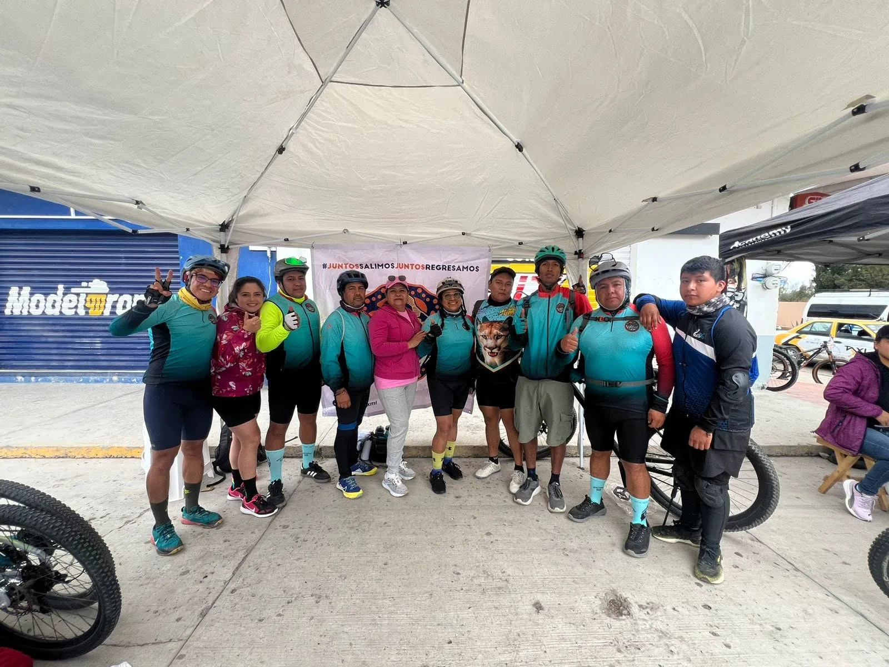
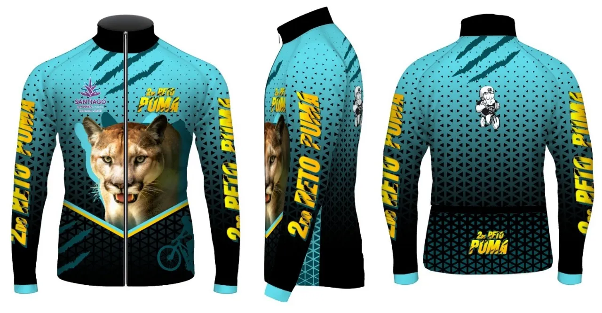

·
Territorio para medir tu fuerza.
Bienvenido a la Cuarta Edición del Reto Puma Bike. Somos una comunidad apasionada por el ciclismo, dedicada a promover la participación y el espíritu deportivo en todas las edades.
Dos rutas desafiantes, caminos de Actopan y una sola meta: recorrer el territorio puma con respeto por la montaña y por cada competidor.

Elige tu desafío
Dos rutas. Una meta.
Encuentra tu lugar
Categorías con premiación
Las categorías se organizan por rama, edad nominal y tipo de bicicleta.
Aparta tu lugar
Kit y registro
Colección
La rodada se queda contigo.
Conoce el jersey de la edición y las piezas que han marcado el territorio puma.
Ver colección
Comunidad que rueda
Patrocinadores
Gracias a quienes hacen que la carrera llegue más lejos.
Avisos
Todo claro antes de arrancar.
Revisa los avisos oficiales; actualizaremos esta franja con el material del comité.